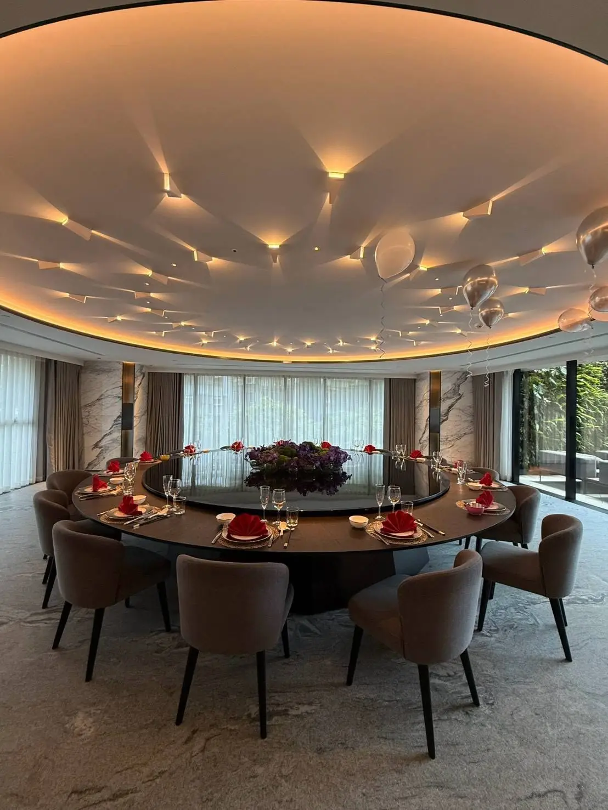

抓周跟彌月宴請私廚到府，最大的價值不是菜色多精緻，而是讓爸媽在寶寶的重要時刻，不用一邊招呼客人一邊煩惱上菜，能把注意力留給孩子跟家人。
抓周有固定的儀式環節（拜天公、抓周物品、切蛋糕等），建議提前把流程時間表交給主廚團隊，讓上菜節奏配合儀式進行，不會互相干擾。
彌月宴常會邀請長輩、親友甚至月子中心的護理人員，年齡層跨度大，菜單設計上會建議保留清淡、易入口的選項，兼顧長輩與其他賓客的需求。
這類場合通常會有大量拍照需求，餐桌擺盤與整體佈置的協調性也是主廚團隊會一併留意的細節，讓每張照片背景都好看。
舒苑團隊有豐富的抓周宴到府經驗，從鐵板燒現場料理到儀式流程配合都能完整規劃，可以參考豪宅抓周案例了解實際執行方式。
如果你正在規劃寶寶的抓周或彌月宴，歡迎直接聯繫舒苑團隊，會有專人依儀式流程與賓客組成提供更詳細的建議。
提供活動日期、人數與場地，我們將提供最適合的私廚方案與報價建議。